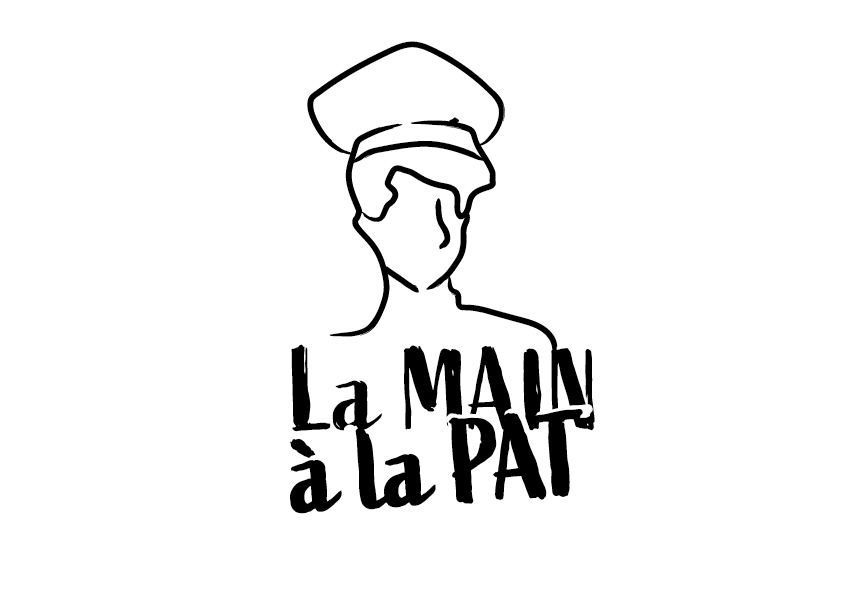

Découvrez la Pat
Le 10 juin 2023 11h-21h
Nous vous invitons à participer à un événement sur la PAT (Projet Alimentaire Territorial) de Suresnes, qui vise à promouvoir une alimentation locale, durable et responsable dans les écoles de la ville de Suresnes.
Lors de cet événement, vous pourrez rencontrer des acteurs locaux de la filière alimentaire, des agriculteurs, des producteurs, des transformateurs, des distributeurs et des restaurateurs, qui s'engagent à offrir des produits de qualité, respectueux de l'environnement et de la santé.
Vous pourrez également assister à des conférences et des ateliers pour les petits comme les grands sur les enjeux du développement d'une alimentation durable .
Nous espérons vous voir nombreux à cet événement pour contribuer ensemble à la promotion d'une alimentation locale, durable et responsable dans notre territoire.
Nous vous donnons rendez-vous sur la Place du Général Leclerc à Suresnes, de 11h à 21h .
Partagez sur :


La mairie
2 rue Carnot, 92150 Suresnes
01 41 18 19 20
ACCÈS ET HORAIRES D’OUVERTURE
NOUS CONTACTER
Lettre d'information
Abonnez-vous à la newsletter pour ne rien manquer des dernières actualités ou des prochains événements.
RECEVOIR LA NEWSLETTER